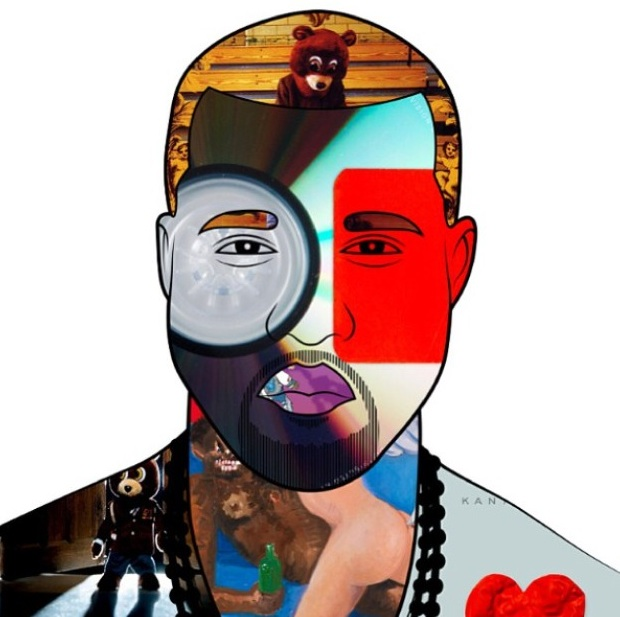

Kanye Omari West was born in Atlanta, Georgia, on June 8, 1977. He left college to pursue a musical career, producing tracks for Jay-Z while polishing his demo. He released The College Dropout in 2004. It sold 2.6 million copies and won Best Rap Album. His follow-up releases have been equally successful and West has become a celebrity famous for his outrageous and entertaining statements
Early Life
Rapper, record producer and singer Kanye Omari West was born in Atlanta, Georgia, on June 8, 1977. His parents divorced when he was three. He was raised on Chicago's South Side by his mother, an English professor, and spent summers with his father, an award-winning photographer who became a church counselor.
West graduated from Polaris High School and completed one year of art school at Chicago State University. After spending time rapping and working with local artists, West moved to New York in 2001 to pursue his music career full time. Respected rapper Jay-Z hired him to produce songs for his album The Blueprint, which sold more than 420,000 copies in the first week alone. West went on to produce for a handful of stars including rapper Ludacris and singer Beyonce.
While serving as producer to the stars, West cut his own demo and began shopping it around. He signed a deal with Roc-A-Fella Records, Jay-Z's label, in 2002 and began recording in the studio.
On the way home from a session in Los Angeles, West fell asleep at the wheel and was involved in a head-on car collision that left him with a fractured jaw.
Solo Career
With his jaw wired shut, West returned to the recording studio to complete his debut release The College Dropout. The album, which was released in 2004, sold 2.6 million copies and earned him a Best Rap Album Grammy. He matched that feat with 2005's Late Registration and 2007's Graduation.
West also has won three Best Rap Song Grammys for his hits "Jesus Walks," "Diamonds from Sierra Leone" and "Good Life." For his hit "Gold Digger,"

he took home the Best Rap Solo Performance award in 2005. West also won a Grammy for Best R&B Song for "You Don't Know My Name," sung by Alicia Keys. His collaboration with Common on "Southside" earned West the Grammy for Best Rap Performance by a Duo or Group in 2007. In 2009, West released two albums on the same day—Good Morning Good Night: Dusk and Good Morning Good Night: Dawn. That same year, Kanye West debuted the line of shoes he designed for the luxury goods brand Louis Vuitton. He engages in a number of charitable activities as well. Founded by his mother in 2007, he supports the Kanye West Foundation, which works to reduce the number of high school dropouts.
West and designer Alexis Phifer began dating in 2002. He proposed in August 2006, but the engagement ended 18 months later. West had also been romantically linked to model Amber Rose. In early 2012, West began dating reality television star Kim Kardashian. He announced at a concert in that December that he and Kardashian are expecting their first child together.
On June 15, 2013, West became a father for the first time. He and Kardashian welcomed a daughter who was born in a hospital in Los Angeles. The couple decided to name their daughter North. On October 21, 2013, West proposed to Kardashian at the AT&T baseball stadium in San Francisco. Kardashian accepted his proposition.
After an interview that West had with Britain's BBC in September of 2013, talk show host Jimmy Kimmel made a parody of the scenario, mocking West in the process. In response, West released a tirade of tweets attacking Kimmel. The tweets were deleted shortly after being posted. Kimmel also announced that he spoke to West on the phone afterwards, with West saying that Kimmel's life would be much better if he apologized. West was later brought on to Jimmy Kimmel Live!, where the two cleared the air about their ongoing feud.
The following May, West and Kardashian married in true celebrity style. The couple held their rehearsal dinner at Versailles, once the home to French royalty, located outside of Paris. On May 24, 2014, the pair moved their celebration to Florence, Italy, for their official ceremony. They exchanged their vows at Forte di Belvedere, a historic fortress, in front of family and friends. Andrea Bocelli sang as Kardashian walked down the aisle and other attendees included designer Rachel Roy and director Steve McQueen.
In 2015, during the 10th season of Kardashian's reality series Keeping Up with the Kardashians, she documented her and West's desire to get pregnant again, and her struggles with fertility issues. In May of that year, Kardashian revealed in a teaser for her reality show that she is pregnant with her and West's second child. The couple welcomed a son in December 2015.